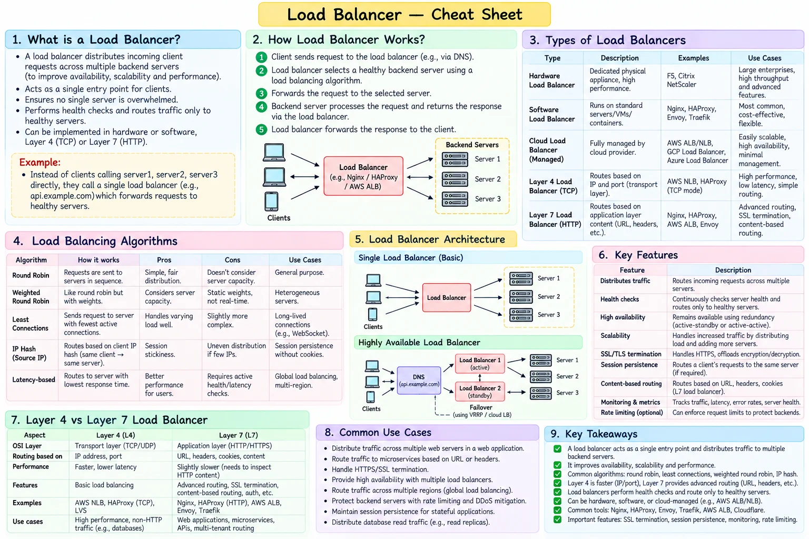

Topic · System Design Fundamentals
Load Balancer
Distribute traffic only to healthy instances, enabling horizontal scaling and failover.
Cheat sheet


Quick Revision
- L4 routes on transport info (IP/port); L7 can inspect URL, headers, cookies, content.
- Algorithms: round robin, weighted RR, least connections, least response time, IP hash, consistent/ring hash.
- Prefer stateless backends; otherwise session affinity or shared state storage.
- Essentials: health checks, connection draining, redundant load balancers.
Design checklist
- Requirements - L4 vs L7, HTTP/gRPC/TCP, statefulness, geo-routing, TLS, availability.
- Estimation - peak RPS, active connections, bytes/s, TLS CPU.
- High-level design - DNS/global routing → HA load balancer → stateless servers → internal load balancers/services.
- Deep dives - passive and active health checks, draining during deploys, sticky sessions, retries, overload protection, LB failure.
Trade-offs
| Choice | Benefit | Cost / risk |
|---|---|---|
| L4 load balancing | Fast, protocol-agnostic | Can't route by URL, header, cookie, or content |
| L7 load balancing | Rich routing, TLS, authentication, caching | More CPU, latency, configuration complexity |
| Sticky sessions | Easy session affinity | Uneven load, hard failover and rebalancing |
Failure modes
- Load balancer is a single point of failure - multiple instances across zones, managed LB, DNS/global failover.
- Backend fails during traffic - health-check it, stop new routing, drain connections, replace it.
- Retries amplify an outage - retry budgets, exponential backoff with jitter, timeouts, load shedding.
Interview practice
Answer aloud, then reveal.
Media.net SRE (2026): compare round robin, least connections, IP hash, consistent hashing.
Round robin fits similar stateless nodes; weighted handles unequal capacity; least connections fits variable-duration work; IP hash gives affinity; consistent hashing keeps ownership with limited remapping when nodes change.
rtCamp (2025): design a load balancer - reverse proxying, traffic distribution, fault tolerance.
Redundant L4/L7 reverse proxies, health checks, round robin or least connections, TLS termination, connection draining, metrics, automatic backend removal and recovery.
Atlassian: a Google Doc is permanently assigned to one server by round robin. What's wrong?
Round robin gives no deterministic ownership after failures or scaling - document state gets stranded or misrouted. Use a partition map or consistent hashing, plus replication, leases, and fencing.